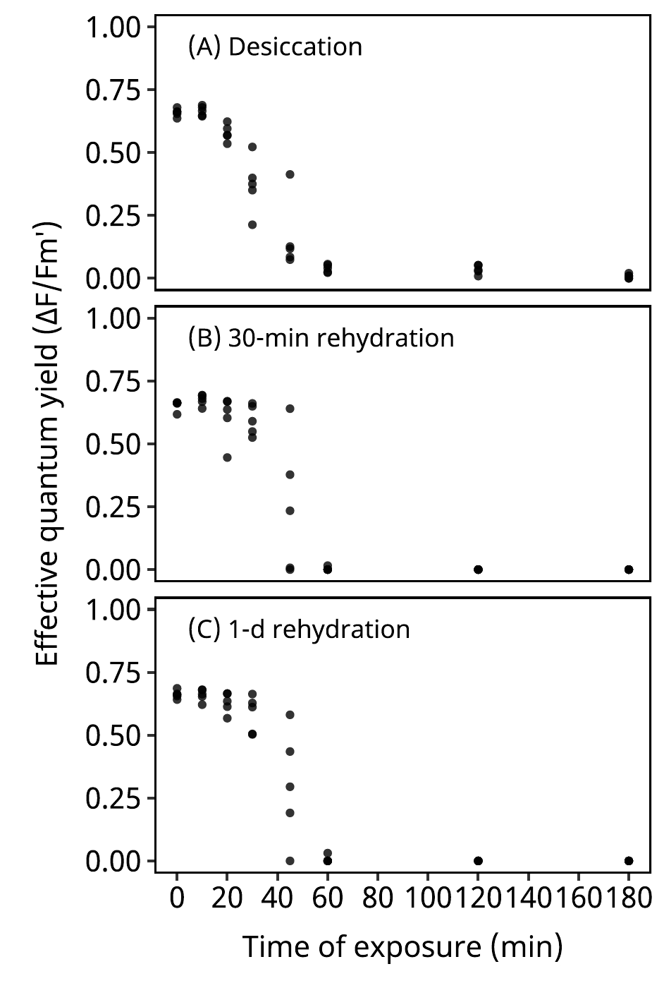
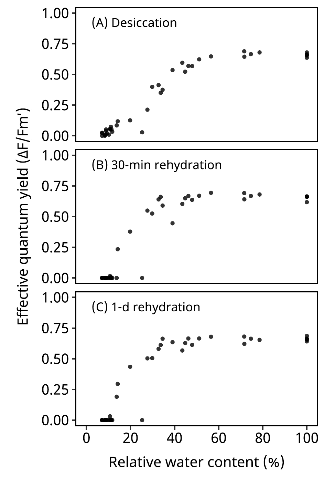

Smithson, M., & Verkuilen, J. (2006). A better lemon squeezer? Maximum-likelihood regression with beta-distributed dependent variables. Psychological Methods, 11(1), 54–71. https://doi.org/10.1037/1082-989X.11.1.54
# A tibble: 120 × 8
state nstate minutes rwc awc sawc value_m value_sd
<fct> <fct> <dbl> <dbl> <dbl> <dbl> <dbl> <dbl>
1 Desiccation D 0 100 1 0.999 0.679 0.00624
2 Desiccation D 10 71.6 0.874 0.716 0.688 0.0170
3 Desiccation D 20 39.1 0.646 0.391 0.535 0.170
4 Desiccation D 30 34.6 0.600 0.346 0.375 0.181
5 Desiccation D 45 19.8 0.390 0.199 0.126 0.0839
6 Desiccation D 60 10.7 0.158 0.108 0.0562 0.0276
7 Desiccation D 120 10.8 0.161 0.109 0.0523 0.00797
8 Desiccation D 180 10.2 0.141 0.103 0.0095 0.0123
9 Desiccation D 0 100 1 0.999 0.661 0.0150
10 Desiccation D 10 74.6 0.890 0.746 0.665 0.0133
# ℹ 110 more rows[1] TRUE prior class coef
student_t(3, 0, 2.5) Intercept
(flat) lscale
inv_gamma(1.494197, 0.056607) lscale gpawc2nstateD
inv_gamma(1.494197, 0.056607) lscale gpawc2nstateDay
inv_gamma(1.494197, 0.056607) lscale gpawc2nstateThirty
student_t(3, 0, 2.5) sdgp
student_t(3, 0, 2.5) sdgp gpawc2nstateD
student_t(3, 0, 2.5) sdgp gpawc2nstateDay
student_t(3, 0, 2.5) sdgp gpawc2nstateThirty
(flat) b
(flat) b nstateDay
(flat) b nstateThirty
(flat) b sawc:nstateD_1
(flat) b sawc:nstateDay_1
(flat) b sawc:nstateThirty_1
student_t(3, 0, 2.5) Intercept
student_t(3, 0, 2.5) sds
student_t(3, 0, 2.5) sds s(awc, k = 10, bs = "cr", by = nstate)
(flat) b
(flat) b nstateDay
(flat) b nstateThirty
(flat) b sawc:nstateD_1
(flat) b sawc:nstateDay_1
(flat) b sawc:nstateThirty_1
logistic(0, 1) Intercept
student_t(3, 0, 2.5) sds
student_t(3, 0, 2.5) sds s(awc, k = 5, bs = "cr", by = nstate)
group resp dpar nlpar lb ub tag source
default
0 default
0 default
0 default
0 default
0 default
0 (vectorized)
0 (vectorized)
0 (vectorized)
phi default
phi (vectorized)
phi (vectorized)
phi (vectorized)
phi (vectorized)
phi (vectorized)
phi default
phi 0 default
phi 0 (vectorized)
zi default
zi (vectorized)
zi (vectorized)
zi (vectorized)
zi (vectorized)
zi (vectorized)
zi default
zi 0 default
zi 0 (vectorized)Running MCMC with 5 parallel chains, with 6 thread(s) per chain...
Chain 2 finished in 14741.3 seconds.
Chain 4 finished in 17995.2 seconds.
Chain 1 finished in 32004.3 seconds.
The remaining chains had a mean execution time of 47892.2 seconds. used (Mb) gc trigger (Mb) max used (Mb)
Ncells 3906714 208.7 7590844 405.4 6666535 356.1
Vcells 46183355 352.4 68457216 522.3 46755665 356.8 Family: zero_inflated_beta
Links: mu = logit; phi = log; zi = logit
Formula: value_m ~ gp(awc, k = 20, c = 5/4, by = nstate, m = 2)
phi ~ s(awc, k = 10, bs = "cr", by = nstate) + nstate
zi ~ s(awc, k = 5, bs = "cr", by = nstate) + nstate
Data: data2 (Number of observations: 120)
Draws: 3 chains, each with iter = 14000; warmup = 4000; thin = 1;
total post-warmup draws = 30000
Smoothing Spline Hyperparameters:
Estimate Est.Error l-95% CI u-95% CI Rhat Bulk_ESS
sds(phi_sawcnstateD_1) 0.40 0.24 0.11 1.02 1.00 7993
sds(phi_sawcnstateThirty_1) 0.36 0.43 0.01 1.52 1.00 3730
sds(phi_sawcnstateDay_1) 0.13 0.16 0.00 0.57 1.00 10831
sds(zi_sawcnstateD_1) 0.62 0.55 0.02 2.04 1.00 15750
sds(zi_sawcnstateThirty_1) 0.59 0.58 0.02 2.07 1.00 18374
sds(zi_sawcnstateDay_1) 0.63 0.58 0.02 2.13 1.00 17953
Tail_ESS
sds(phi_sawcnstateD_1) 10481
sds(phi_sawcnstateThirty_1) 9474
sds(phi_sawcnstateDay_1) 14736
sds(zi_sawcnstateD_1) 14297
sds(zi_sawcnstateThirty_1) 14194
sds(zi_sawcnstateDay_1) 13648
Gaussian Process Hyperparameters:
Estimate Est.Error l-95% CI u-95% CI Rhat Bulk_ESS
sdgp(gpawc2nstateD) 1.98 0.76 0.99 3.94 1.00 12211
sdgp(gpawc2nstateThirty) 1.31 0.78 0.23 3.28 1.00 4949
sdgp(gpawc2nstateDay) 1.33 0.75 0.33 3.20 1.00 6712
lscale(gpawc2nstateD) 0.44 0.14 0.18 0.70 1.00 6351
lscale(gpawc2nstateThirty) 0.39 0.19 0.04 0.79 1.00 4490
lscale(gpawc2nstateDay) 0.43 0.19 0.08 0.87 1.00 4182
Tail_ESS
sdgp(gpawc2nstateD) 18513
sdgp(gpawc2nstateThirty) 3454
sdgp(gpawc2nstateDay) 4929
lscale(gpawc2nstateD) 7329
lscale(gpawc2nstateThirty) 2828
lscale(gpawc2nstateDay) 2810
Regression Coefficients:
Estimate Est.Error l-95% CI u-95% CI Rhat Bulk_ESS
Intercept -0.49 0.67 -1.93 0.62 1.00 4528
phi_Intercept 4.61 0.29 4.01 5.15 1.00 20800
zi_Intercept -2.91 0.67 -4.40 -1.78 1.00 25701
phi_nstateThirty -1.34 0.77 -2.79 0.26 1.00 5677
phi_nstateDay -0.83 0.62 -2.12 0.33 1.00 9122
zi_nstateThirty 0.93 0.94 -0.81 2.90 1.00 21976
zi_nstateDay 0.88 0.95 -0.89 2.84 1.00 22362
phi_sawc:nstateD_1 0.23 0.13 -0.01 0.49 1.00 22617
phi_sawc:nstateThirty_1 0.78 0.35 -0.01 1.40 1.00 7138
phi_sawc:nstateDay_1 0.74 0.25 0.27 1.24 1.00 9250
zi_sawc:nstateD_1 -0.81 0.64 -2.21 0.30 1.00 26672
zi_sawc:nstateThirty_1 -3.84 1.25 -6.67 -1.82 1.00 19854
zi_sawc:nstateDay_1 -4.07 1.34 -7.13 -1.96 1.00 20580
Tail_ESS
Intercept 4646
phi_Intercept 22241
zi_Intercept 18221
phi_nstateThirty 10618
phi_nstateDay 11023
zi_nstateThirty 18396
zi_nstateDay 19491
phi_sawc:nstateD_1 20089
phi_sawc:nstateThirty_1 11024
phi_sawc:nstateDay_1 10418
zi_sawc:nstateD_1 15811
zi_sawc:nstateThirty_1 16925
zi_sawc:nstateDay_1 17233
Draws were sampled using sample(hmc). For each parameter, Bulk_ESS
and Tail_ESS are effective sample size measures, and Rhat is the potential
scale reduction factor on split chains (at convergence, Rhat = 1).Posterior predictive checks